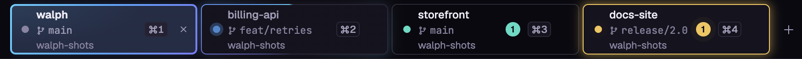

01
Every workspace on the same screen
Open all your projects as tabs in one window. Each tab shows the folder, its branch, its
⌘1…⌘9 shortcut and what Claude Code is doing there (working, finished, waiting for you or
failed), so you can see the state of every project at a glance. Each workspace keeps its own explorer,
terminals, git, language servers and Claude sessions, and switching between them loses nothing.
